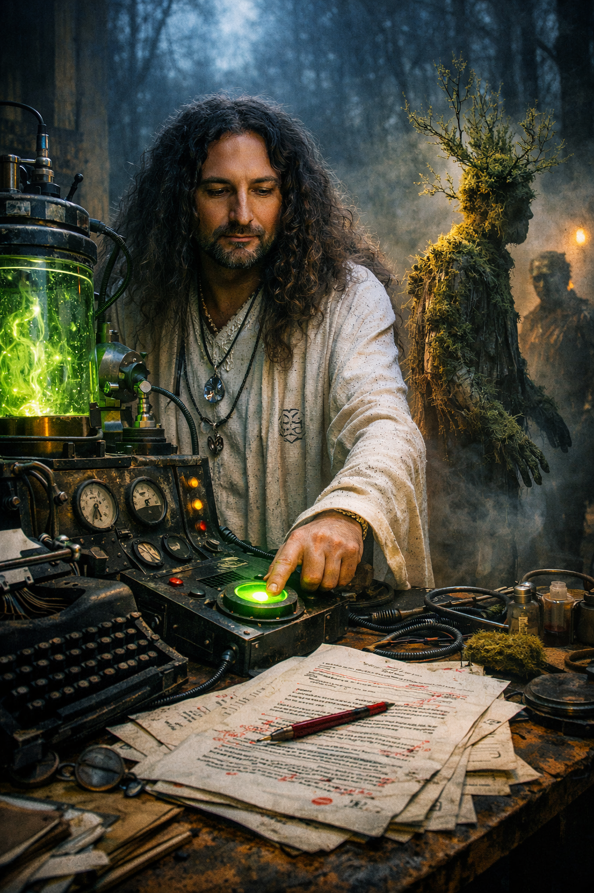

Opening fragment
Start with a compact atmospheric fragment and one clear line of publication context. Keep this block short so the page breathes before longer prose appears.

This format holds prose continuity while keeping images active at regular intervals, suited to essays, special articles, and chapter excerpts.
Start with a compact atmospheric fragment and one clear line of publication context. Keep this block short so the page breathes before longer prose appears.

Use one image every major section to mark tonal movement. Let each image be semantically connected to the adjacent text rather than decorative.

This final section can carry an excerpt, editorial note, or publication metadata while retaining the same rhythm and typographic restraint.